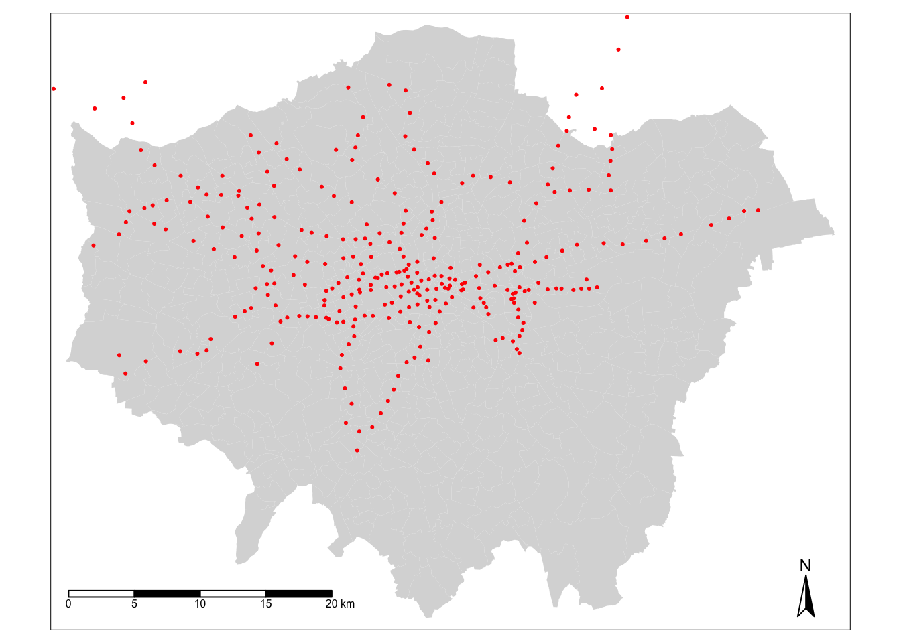
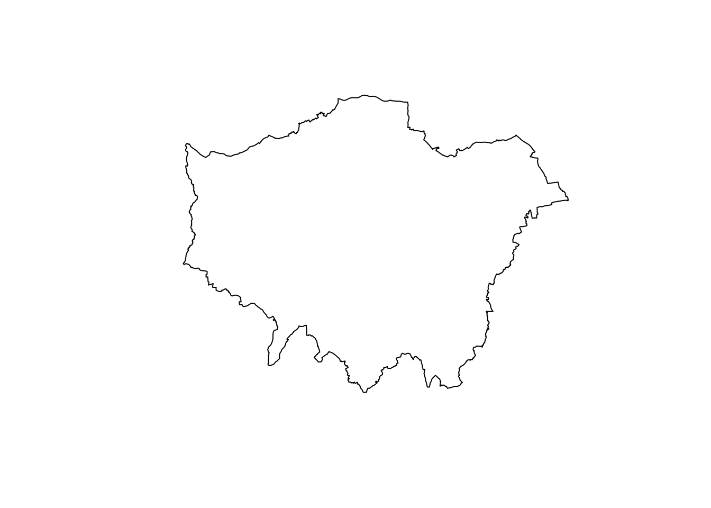

6 Analysing Spatial Patterns I: Geometric Operations
This week, we will be looking at the use of geometric operations within spatial data processing and analysis. Geometric operations and spatial queries are not really a theoretical topic per se in spatial “pattern” analysis but rather essential building blocks to overall spatial data processing and analysis. This is because - and the clue is in the name - they conduct incredibly useful operations and queries on or using the geometry of our data sets, from calculating the area covered by an individual polygon in an areal unit data set, or subsetting the spatial extent of a data set based on another, to running buffer and point-in-polygon calculations.
6.1 Lecture recording
- Lecture W6
6.2 Reading list
- Reading #1
- Reading #2
6.3 Bike theft in London
This week, we will be investigating bike theft in London in 2019 - and look to confirm a very simple hypothesis: that bike theft primarily occurs near tube and train stations. We will be investigating its distribution across London using the point data provided within our crime data set. We will then compare this distribution to the location of train and tube stations using specific geometric operations and spatial queries that can compare the geometry of two (or more) data sets.
We will also learn how to download data from OpenStreetMap as well as use an interactive version of tmap to explore the distribution of the locations of individual bike theft against the locations of these stations.
6.3.1 Housekeeping
Let’s get ourselves ready to start our lecture and practical content by first downloading the relevant data and loading this within our script.
Open a new script within your GEOG0030 project and save this script as wk6-bike-theft-analysis.r. At the top of your script, add the following metadata (substitute accordingly):
# Analysing bike theft and its relation to stations using geometric analysis
# Date: January 2021
# Author: Justin Before continuing, please install the following libraries through your console: leaflet, osmdata, RColorBrewer
Within your script, add the following libraries for loading:
# libraries
library(tidyverse)
library(sf)
library(tmap)
library(janitor)
library(RColorBrewer)
library(leaflet)
library(osmdata)6.3.2 Loading data
This week, we will start off using three data sets:
- London Ward boundaries for 2018
- Crime in London for 2019 from data.police.uk
- Train and Tube Stations from Transport for London
File download
| File | Type | Link |
|---|---|---|
| Crime in London 2019 | csv |
Download |
| Train and tube stations in London | kml |
Download |
Download the files above. Store your crime_all_2019_london.csv in your data/raw/crime folder. Move your tfl_stations.kml download to your raw data folder and create a new transport folder to contain it. The London Ward boundaries for 2019 shoudl still be in your data/raw/boundaries folder.
Let’s first load our London Ward shapefile:
# read in our 2018 London Ward boundaries
london_ward_shp <- read_sf("data/raw/boundaries/2018/London_Ward.shp")Check the CRS of our london_ward_shp spatial dataframe:
# check the CRS for the 2018 London Ward boundaries
st_crs(london_ward_shp)## Coordinate Reference System:
## User input: OSGB 1936 / British National Grid
## wkt:
## PROJCRS["OSGB 1936 / British National Grid",
## BASEGEOGCRS["OSGB 1936",
## DATUM["OSGB 1936",
## ELLIPSOID["Airy 1830",6377563.396,299.3249646,
## LENGTHUNIT["metre",1]]],
## PRIMEM["Greenwich",0,
## ANGLEUNIT["degree",0.0174532925199433]],
## ID["EPSG",4277]],
## CONVERSION["British National Grid",
## METHOD["Transverse Mercator",
## ID["EPSG",9807]],
## PARAMETER["Latitude of natural origin",49,
## ANGLEUNIT["degree",0.0174532925199433],
## ID["EPSG",8801]],
## PARAMETER["Longitude of natural origin",-2,
## ANGLEUNIT["degree",0.0174532925199433],
## ID["EPSG",8802]],
## PARAMETER["Scale factor at natural origin",0.9996012717,
## SCALEUNIT["unity",1],
## ID["EPSG",8805]],
## PARAMETER["False easting",400000,
## LENGTHUNIT["metre",1],
## ID["EPSG",8806]],
## PARAMETER["False northing",-100000,
## LENGTHUNIT["metre",1],
## ID["EPSG",8807]]],
## CS[Cartesian,2],
## AXIS["(E)",east,
## ORDER[1],
## LENGTHUNIT["metre",1]],
## AXIS["(N)",north,
## ORDER[2],
## LENGTHUNIT["metre",1]],
## USAGE[
## SCOPE["Engineering survey, topographic mapping."],
## AREA["United Kingdom (UK) - offshore to boundary of UKCS within 49°45'N to 61°N and 9°W to 2°E; onshore Great Britain (England, Wales and Scotland). Isle of Man onshore."],
## BBOX[49.75,-9,61.01,2.01]],
## ID["EPSG",27700]]Of course it should be of no surprise that our london_ward_shp spatial dataframe is in BNG / ESPG: 27700, however, it is always good to check. Let’s go ahead and read in our tfl_stations dataset:
# read in our London stations dataset
london_stations <- read_sf("data/raw/transport/tfl_stations.kml")This dataset is provided as a kml file, which stands for Keyhole Markup Language (KML). KML was originally created as a file format used to display geographic data in Google Earth. So we definitely need to check what CRS this dataset is in and decide whether we will need to do some reprojecting.
# check the CRS for the London stations
st_crs(london_stations)## Coordinate Reference System:
## User input: WGS 84
## wkt:
## GEOGCRS["WGS 84",
## DATUM["World Geodetic System 1984",
## ELLIPSOID["WGS 84",6378137,298.257223563,
## LENGTHUNIT["metre",1]]],
## PRIMEM["Greenwich",0,
## ANGLEUNIT["degree",0.0174532925199433]],
## CS[ellipsoidal,2],
## AXIS["geodetic latitude (Lat)",north,
## ORDER[1],
## ANGLEUNIT["degree",0.0174532925199433]],
## AXIS["geodetic longitude (Lon)",east,
## ORDER[2],
## ANGLEUNIT["degree",0.0174532925199433]],
## ID["EPSG",4326]]The result informs us that we are going to need to reproject our data in order to use this dataframe with our london_ward_shp spatial dataframe. Luckily in R and the sf library, this reprojection is a relatively straight-forward transformation, requiring only one function: st_transform(). The function is very simple to use - you only need to provide the function with the dataset and the code for the new CRS you wish to use with the data:
# reproject our data from WGS84 to BNG
london_stations <- st_transform(london_stations, 27700)We can double-check whether our new variable is in the correct CRS by using the st_crs() command:
# check the CRS for the London stations
st_crs(london_stations)## Coordinate Reference System:
## User input: EPSG:27700
## wkt:
## PROJCRS["OSGB 1936 / British National Grid",
## BASEGEOGCRS["OSGB 1936",
## DATUM["OSGB 1936",
## ELLIPSOID["Airy 1830",6377563.396,299.3249646,
## LENGTHUNIT["metre",1]]],
## PRIMEM["Greenwich",0,
## ANGLEUNIT["degree",0.0174532925199433]],
## ID["EPSG",4277]],
## CONVERSION["British National Grid",
## METHOD["Transverse Mercator",
## ID["EPSG",9807]],
## PARAMETER["Latitude of natural origin",49,
## ANGLEUNIT["degree",0.0174532925199433],
## ID["EPSG",8801]],
## PARAMETER["Longitude of natural origin",-2,
## ANGLEUNIT["degree",0.0174532925199433],
## ID["EPSG",8802]],
## PARAMETER["Scale factor at natural origin",0.9996012717,
## SCALEUNIT["unity",1],
## ID["EPSG",8805]],
## PARAMETER["False easting",400000,
## LENGTHUNIT["metre",1],
## ID["EPSG",8806]],
## PARAMETER["False northing",-100000,
## LENGTHUNIT["metre",1],
## ID["EPSG",8807]]],
## CS[Cartesian,2],
## AXIS["(E)",east,
## ORDER[1],
## LENGTHUNIT["metre",1]],
## AXIS["(N)",north,
## ORDER[2],
## LENGTHUNIT["metre",1]],
## USAGE[
## SCOPE["Engineering survey, topographic mapping."],
## AREA["United Kingdom (UK) - offshore to boundary of UKCS within 49°45'N to 61°N and 9°W to 2°E; onshore Great Britain (England, Wales and Scotland). Isle of Man onshore."],
## BBOX[49.75,-9,61.01,2.01]],
## ID["EPSG",27700]]You should see that our london_stations spatial dataframe is now in BNG / EPSG: 27700. We are now ready to load our final dataset - our csv that contains our crime from 2019.
From this csv, we want to do three things:
- Extract only those crimes that are bicycle thefts, i.e.
crime_type == "bicycle theft". - Convert our csv into a spatial dataframe that shows the locations of our crimes, determined by the latitude and longitudes provided, as points.
- Transform our data from WGS84 / 4326 to BNG / 27700.
Since we are getting pretty used to looking at code and cleaning data we should be able to chain these operations using the %>% operator:
# read in our crime data csv from our raw data folder
bike_theft_2019 <- read_csv("data/raw/crime/crime_all_2019_london.csv") %>%
# clean names
clean_names() %>%
# filter according to crime type and ensure we have no NAs in our dataset
filter(crime_type == "Bicycle theft" & !is.na(longitude) & !is.na(latitude)) %>%
# select just the longitude and latitude columns
select(longitude, latitude) %>%
# transform into a point spatial dataframe
# note providing the columns as the coordinates to use
# plus the CRS, which as our columns are long/lat is WGS84/4236
st_as_sf(coords=c('longitude', 'latitude'), crs=4236) %>%
# convert into BNG
st_transform(27700)We now have our three datasets loaded, it is time for a little data checking. We can see just from our Environment window that in total, we have 302 stations and 18,744 crimes to look at in our analysis. We can double-check the (Attribute) tables of our newly created spatial dataframes to see what data we have to work with.
You can either do this manually by clicking on the variable, or using commands such as head(), summary() and names() to get an understanding of our dataframe structures and the field names present - you can choose your approach, but make sure to look at your data.
As you should remember from the code above, for our bicycle theft data, we actually only have our geometry column because this is all that we extracted from our crime csv.For our london_stations spatial dataframe, we have a little more information, including the name of the station and its address - as well as its geometry.
Now, let’s nap all three layers of data onto a single map using tmap:
# plot our London Wards first
tm_shape(london_ward_shp) + tm_fill() +
# then add bike crime as blue
tm_shape(bike_theft_2019) + tm_dots(col="blue") +
# then add our stations as red
tm_shape(london_stations) + tm_dots(col="red") +
# then add a north arrow
tm_compass(type="arrow", position = c("right", "bottom")) +
# then add a scale bar
tm_scale_bar(breaks = c(0, 5, 10, 15, 20), position = c("left", "bottom"))
Let’s think about the distribution of our data - we can already see that our bike theft is obviously highly concentrated in the centre of London although we can certainly see some clusters in the Greater London areas. Let’s go ahead and temporally remove the bike theft data from our map for now to see where our tube and train stations are located.
To remove the bike data, simply put a comment sign in front of that piece of code and re-run the code:
# plot our London Wards first
tm_shape(london_ward_shp) + tm_fill() +
# then add bike crime as blue
# tm_shape(bike_theft_2019) + tm_dots(col="blue") +
# then add our stations as red
tm_shape(london_stations) + tm_dots(col="red") +
# then add a north arrow
tm_compass(type="arrow", position = c("right", "bottom")) +
# then add a scale bar
tm_scale_bar(breaks = c(0, 5, 10, 15, 20), position = c("left", "bottom"))
We can see our train and tube stations are only present in primarily the north of London - and not really present in the south. This isn’t quite right and as it turns out the dataset only contains those train stations used by Transfort for London within the tube network rather than all the stations in London. We will need to fix this before conducting our full analysis. But this isn’t the only problem with our dataset - we can see that both our bike_theft spatial dataframe and our london_stations spatial dataframe extend beyond our London boundary.
6.3.3 Data preparation
When we want to reduce a dataset to the spatial extent of another, there are two different approaches to conducting this in spatial analysis - a subset or a clip - which each deal with the geometry of the resulting dataset in slightly different ways.
A clip-type operation works a bit like a cookie-cutter - it will take the geometry of “dough” layer (i.e. the layer you want to clip), places a “cookie-cutter” layer on top (i.e. the layer you want to clip by) and then returns only the dough contained within the cookie-cutter. This will mean that the geometry of our resulting “dough” layer will be modified, if it contains observation features that extend further than the “cookie-cutter” extent - it will literally “cut” the geometry of our data.
A subset-type operation is what is known in GIScience-speak as a select by location query - in this case, our subset will return the full geometry of each observation feature that intersects with our “clip when our”’“cookie-cutter” layer. Any geometry that does not intersect with our clip layer will be removed from the geometry of our resulting layer.
Luckily for us, as we are using point data, we can (theorectically) use either approach because it is not possible to split the geometry of a single point feature. However, if a point feature does fall on the same geometry as our “clip” layer, it will be excluded from our dataset.
When it comes to polygon and line data, not understanding the differences between the two approaches can lead you into difficulties with your data processing - as outlined by our examples in the GIFs above and below - there will be differences in the feature geometry between the clipped layer and the subset layer.
Each approach is implemented differently in R - and can actually be used together to speed up the efficiency in your code. To subset our data, we only need to use the base R library to selection using [] brackets:
# subset our bike_theft_2019 spatial dataframe by the london_ward_shp spatial dataframe
bike_theft_2019_subset <- bike_theft_2019[london_ward_shp,]Conversely, if we want to clip our data, we need to use the st_intersection() function from the sf library.
# clip our bike_theft_2019 spatial dataframe by the london_ward_shp spatial dataframe
bike_theft_2019 <- bike_theft_2019 %>% st_intersection(london_ward_shp)## Warning: attribute variables are assumed to be spatially constant throughout all
## geometriesNote
Which approach you use with future data is always dependent on the dataset you want to use - and the output you need. For example, is keeping the geometry of your observation features in your dataset important? Out of the two, the subset approach is the fastest to use as R is simply comparing the geometries rather than also editing the geometries.
Before we go ahead and sort out our london_stations spatial dataframe, we are going to look at how we can dissolve our london_ward_shp spatial dataframe into a single feature. Reducing a spatial dataframe to a single observation is often required when using R and sf‘s geometric operations to complete geometric comparisons. Sometimes, also, we simply want to map an outline of an area, such as London, rather than add in the additional spatial complexities of our wards. To achieve just a single ’observation’ that represents the outline geometry of our dataset, we use the geometric operation, st_union().
Note
You can also use the st_union() function to union two datasets into one - this can be used to merge data together that are of the same spatial type.
Let’s go ahead and see if we can use this to create our London outline:
# use st_union to create a single outline of London from our london_ward_shp spatial dataframe
london_outline <- london_ward_shp %>% st_union()You should see that our london_outline spatial data frame only has one observation. You can now go ahead and plot() your london_outline spatial dataframe from your console and see what it looks like:

Back to our train and tube stations. We have seen that our current london_stations spatial dataframe really does not provide the coverage of train stations in London that we expected. To add in our missing data, we will be using OpenStreetMap. If you have never come across OpenStreetMap (OSM) before, it is a free editable map of the world.
Note
OpenStreetMap’s spatial coverage is still unequal across the world - plus, as you will find if you use the data, the accuracy and quality of the data can often be quite questionable or simply missing attribute details that we’d like to have, e.g. types of roads and their speed limits, to complete specific types of spatial analysis. As a result, do not expect OSM to contain every piece of spatial data that you would want.
Whilst there are various approaches to downloading data from OpenStreetMap, we will use the osmdata library to directly extract our required OpenStreetMap (OSM) data into a variable. The osmdata library grants access within R to the Overpass API that allows us to run queries on OSM data and then import the data as either sf or sp objects. These queries are at the heart of these data downloads.
To use the library (and API), we need to know how to write and run a query, which requires identifying the key and value that we need within our query to select the correct data. Essentially every map element (whether a point, line or polygon) in OSM is “tagged” with different attribute data. In our case, we are looking for train stations, which fall under the key, Public Transport, with a value of station as outlined in their wiki. These keys and values are used in our queries to extract only map elements of that feature type - to find out how a feature is “tagged” in OSM is simply a case of reading through the OSM documentation and becoming familiar with their keys and values.
In addition to this key-value pair, we also need to obtain the bounding box of where we want our data to be extracted from, i.e. London, to prevent OSM searching the whole map of the world for our feature (although the API query does have in-built time and spatial coverage limits to stop this from happening).
Let’s try to extract elements from OSM that are tagged as public_transport = station from OSM into an osmdata_sf() object:
# extract the coordinates from our London outline using the st_bbox() function
# note we also temporally reproject the london_outline spatial dataframe before obtaining the bbox
# we need our bbox coordinates in WGS84 (not BNG), hence reprojection
p_bbox <- st_bbox(st_transform(london_outline, 4326))
# pass our bounding box coordinates into the OverPassQuery (opq) function
london_stations_osm <- opq(bbox = p_bbox ) %>%
# pipe this into the add_osm_feature data query function to extract our stations
add_osm_feature(key = 'public_transport', value = 'station') %>%
# pipe this into our osmdata_sf object
osmdata_sf()